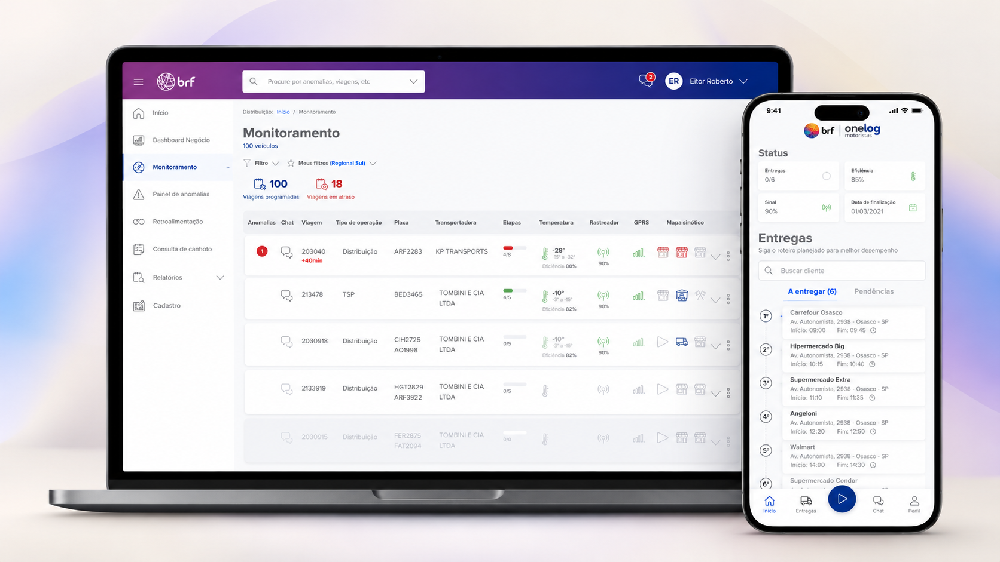
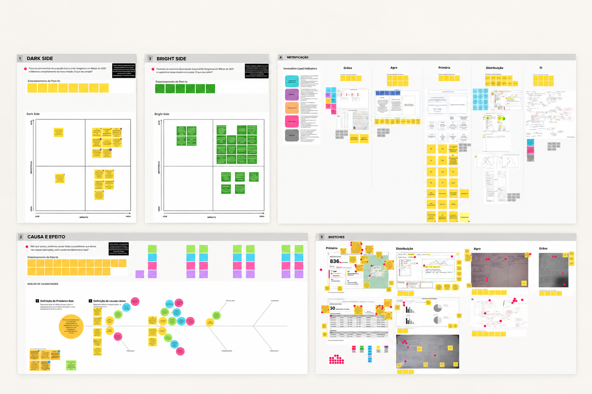
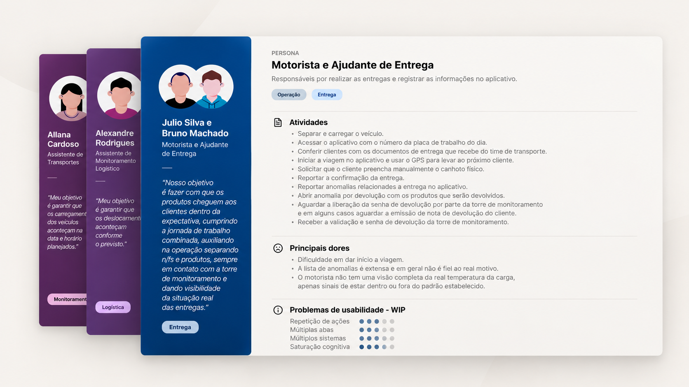
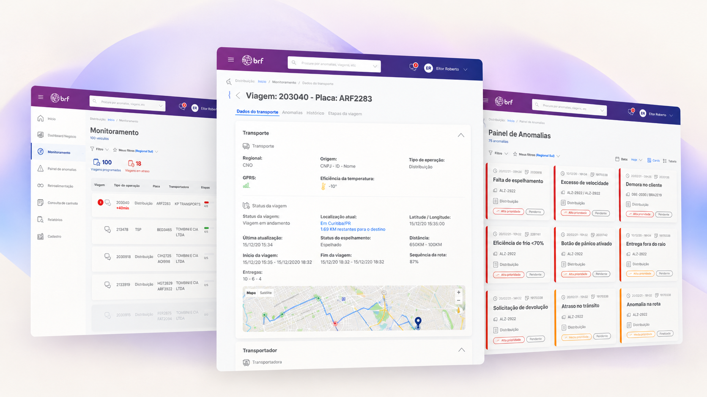
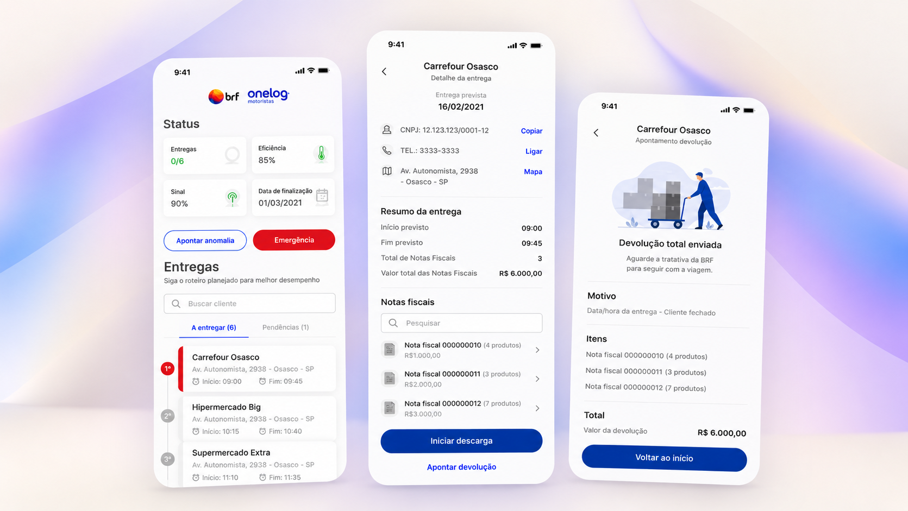
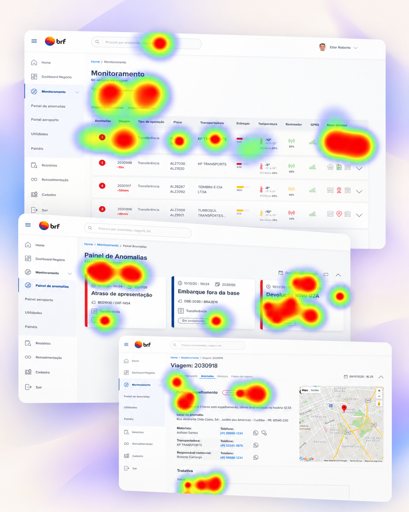

Case 03Tivit BRFMonitoramento Logístico
BRFLOG
Conectando diferentes operações logísticas em uma experiência integrada.
Uma plataforma web para monitoramento de viagens e gestão de anomalias, complementada por um aplicativo mobile para apoiar a jornada dos motoristas.

01O desafio
Quatro operações. Diferentes necessidades. Um objetivo comum.
Da produção à distribuição, diferentes contextos.
O projeto contemplava quatro frentes: distribuição primária, distribuição secundária, agropecuária e commodities.
Cada uma tinha processos, etapas e necessidades de rastreamento próprios, que precisavam ser considerados na construção da solução.
Como reunir essas operações em uma única visão de monitoramento?
O desafio era reunir o acompanhamento das viagens em uma única plataforma, permitindo visualizar etapas do transporte, tempos de percurso, temperatura, localização dos veículos e possíveis anomalias.
Além do monitoramento web, era necessário considerar a experiência mobile dos motoristas.
02Discovery
Antes de desenhar a solução, era preciso entender como a operação funcionava.
Conduzi o discovery para compreender as necessidades dos usuários, os processos existentes e as particularidades de cada frente logística.
As necessidades variavam conforme o contexto. Quem acompanhava transferências entre unidades tinha demandas diferentes de quem monitorava entregas para clientes ou operações ligadas ao agronegócio.
O discovery ajudou a construir uma compreensão mais ampla da operação e a identificar quais informações precisavam estar disponíveis para apoiar o acompanhamento das viagens.

03Mapeamento e definição de personas
Entender quem utilizava o produto e quais decisões precisava tomar.
Com diferentes áreas, responsabilidades e processos envolvidos, entender os usuários era essencial para orientar a concepção da solução.
O mapeamento e a definição de personas ajudaram a organizar os perfis envolvidos, suas responsabilidades e necessidades, identificando as informações relevantes para cada contexto de uso.
Essa análise evidenciou a relação entre quem monitorava as viagens e quem estava em campo executando o transporte, duas perspectivas que precisavam ser consideradas na experiência do produto.

04Arquitetura de informação e fluxos
Uma experiência integrada, com espaço para as particularidades de cada operação.
A partir do entendimento dos usuários e dos processos, atuei na arquitetura da informação, nas jornadas e nos fluxos de navegação, em colaboração com o time multidisciplinar.
Um dos desafios era organizar a complexidade do produto em uma estrutura compreensível, considerando áreas compartilhadas e funcionalidades e informações específicas de cada operação.
A arquitetura precisava equilibrar esses dois níveis, permitindo que os usuários encontrassem as informações e funcionalidades relevantes para seu contexto de trabalho.
Monitoramento da operação
Uma interface para consultar viagens, acompanhar seu andamento, visualizar informações do transporte e identificar e tratar anomalias.
Jornada do motorista
Uma experiência para consultar informações da entrega e realizar as ações necessárias ao longo do transporte.
05Design e prototipação
Transformando a arquitetura em experiências concretas.
A partir da arquitetura e dos fluxos definidos, foram desenvolvidas as interfaces web e mobile, considerando as necessidades de cada contexto de uso.
Na plataforma web, a experiência permitia diferentes níveis de consulta: da visão geral das viagens ao detalhamento de cada transporte. O produto também contemplava um painel de anomalias, com acesso às informações de cada ocorrência e recursos para apoiar seu tratamento.

No aplicativo, os fluxos consideravam o acesso à jornada e aos detalhes da entrega, incluindo informações como rota, mapa, status e dados do transporte.

06Testes de usabilidade
Validar a compreensão da interface e identificar oportunidades de melhoria.
Conduzi testes de usabilidade para avaliar a experiência proposta e identificar dificuldades de uso.
Os testes revelaram oportunidades de melhoria na compreensão de informações e ações, incluindo a interpretação de prioridades no painel de anomalias.
Os testes permitiram confrontar as decisões de design com a forma como os usuários interpretavam e utilizavam a interface, identificando pontos que poderiam gerar dúvidas durante o trabalho.

07Aprendizados
Projetar para a complexidade exige entender o contexto antes de simplificá-lo.
O BRFLOG foi uma experiência que exigiu conectar diferentes processos, usuários e necessidades em uma solução coerente.
O projeto reforçou a importância de compreender a operação antes de definir a arquitetura e as interfaces. Consistência não significa tratar todos os contextos da mesma maneira, mas encontrar padrões compartilhados sem perder as particularidades de cada operação.
Ao final da minha atuação, o BRFLOG estava em fase piloto, com a solução em validação junto a um grupo inicial de usuários.